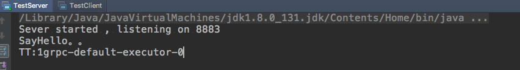
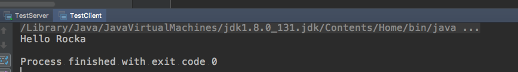

gRPC就是(Google Remote process calling)谷歌开发的远程过程调用的缩写，是服务端比较常见的一种技术，对于本地过程调用，就是完成某个功能任务，在本机上执行代码就可以完成这个功能；远程过程调用就是，里客户端应用可以像调用本地对象一样直接调用另一台不同的机器上服务端应用的方法，使得您能够更容易地创建分布式应用和服务，当然采用到的数据通信服务协议就是protobuf。
gRPC gRPC与其他的RPC系统框架类似，都是定义一个服务，指定它能够被远程各种类型服务端所调用的方法，在服务端实现这个接口，并启动一个服务器，来处理客户端的调用。在客户端同样拥有一个和服务端相同的方法存根。
gRPC 特性
HTTP2
HTTP2(超文本传输协议第二版)，HTTP的基本语义是不变的，比如方法语义（GET/PUST/PUT/DELETE），状态码（200/404/500等）。HTTP2与HTTP1的区别推荐文章
接口定义语言使用protobuf
ProtoBuf是由Google开发的一种数据序列化协议（类似于XML、JSON)，ProtoBuf能够将数据进行序列化，并广泛应用在数据存储、通信协议等。压缩和传输效率高，语法简单，表达力强
支持多语言
gRPC支持多种语言，并能够基于语言自动生成客户端和服务端功能库，grpc-java已经支持Android开发。
gRPC通信方式
一个请求对象对应一个返回对象
一个请求对象，服务端可以传回多个结果对象
客户端传入多个请求对象，服务端返回一个响应结果
可以传入多个对象，返回多个响应对象
gRPC优缺点
优点
protobuf序列化成二进制消息，性能好/效率高(空间和时间效率都表现不错)
proto文件生成客户端和服务端目标代码，Ez
支持向前兼容（新加字段采用默认值）和向后兼容（忽略新加字段） 序列化反序列化直接对应程序中的数据类，不需要解析后在进行其他处理
缺点
gRPC 没有提供提供“服务发现”、“负载均衡”、“连接池”等机制
protobuf二进制可读性差
protobuf gRPC使用ProtoBuf定义服务，我们可以在.proto文件中定义服务并使用任何支持它的语言去生成客户端和服务器。
protobuf的安装
最新的protobufGithub 下载并且解压。
进入解压的目录，设置编译目录(这个/usr/local/protobuf就是安装目录); ./configure –prefix=/usr/local/protobuf
安装，分别执行make和make install 配置环境变量编辑.bash_profile，添加配置文件
1 2 export PROTOBUF=/usr/local/protobuf export PATH=$PROTOBUF/bin:$PATH
source .bash_profile使配置文件生效
protoc –version检查是否安装成功
protobuf用法 编写.proto文件
1 2 3 4 5 6 7 8 9 10 11 12 13 14 15 16 17 18 19 20 21 syntax = "proto3" ; option java_multiple_files = true ; option java_package = "com.rocka" ; option java_outer_classname = "HelloWorldProto" ; option objc_class_prefix = "HLW" ; package com.rocka;service Greeter{ rpc SayHello (HelloRequest) returns (HelloReply) {} } message HelloRequest{ string name = 1 ; } message HelloReply{ string message = 1 ; }
执行命令生成代码protoc –java_out=./java/com.rocka ./proto/helloworld.proto
数据结构
.protobuf
说明
Java 类型
double
double
float
float
int32
int
int64
long
uint32
int[1]
uint64
long[1]
sint32
int
sint64
long
fixed32
int[1]
fixed64
long[1]
sfixed32
int
sfixed64
long
bool
boolean
string
String
bytes
ByteString
protobuf优缺点
优点
性能好/效率高
有代码生成机制
多语言支持
向前向后兼容
缺点
grpc-java-master
下载grpc-java-master
进入compiler目录，执行编译../gradlew java_pluginExecutable，编译成功会在目标路径下生成grpc-java-master/compiler/build/exe/java_plugin/protoc-gen-grpc-java.exe文件。
生成通信代码的命令行。
1 2 protoc --plugin=protoc-gen-grpc-java=build/binaries/java_pluginExecutable/protoc-gen-grpc-java \ --grpc-java_out="$OUTPUT_FILE" --proto_path="$DIR_OF_PROTO_FILE" "$PROTO_FILE"
我本地生成的命令行为:
1 protoc --java_out=./src/main/java --plugin=protoc-gen-grpc-java=/Users/Rocka/Desktop/rocka_workspace/stack_workspace/protobuf_grpc/grpc-java-master/compiler/build/exe/java_plugin/protoc-gen-grpc-java --grpc-java_out=./src/main/java/ ./src/main/proto/helloworld.proto
Tips:
mac 下安装会遇到找不到一些头文件，需要链接头文件。下面的usr/local/protobuf就是protobuf的安装路径。
1 export CXXFLAGS="-I/usr/local/protobuf/include" LDFLAGS="-L/usr/local/protobuf/lib"
生成通信代码的命令行。使用了protoc-gen-grpc-java，就是为了多生成一个GreeterGrpc。
我在执行编译的时候提示有时候版本不一致，或者其他找不到文件的错误，比如本地我装的是3.6.1protobuf的，但是的是找不到3.5.1的某个文件，我又重新装了3.5.1的protobuf
gRPC x protobuf Demo 下面的栗子就是一个简单的交互，其实主要是配置的问题，以及生成代码的问题。网上po的很多代码都不全，而且没有调试成功过，我这个是跑成功过的，下面是使用到的maven仓库依赖。
1 2 3 4 5 6 7 8 9 10 11 12 13 14 15 16 17 18 19 20 21 22 23 24 25 26 27 28 29 30 31 32 33 34 35 36 37 38 39 <properties> <grpc.version>1.16.1</grpc.version><!-- CURRENT_GRPC_VERSION --> </properties> <dependencies> <dependency> <groupId>io.grpc</groupId> <artifactId>grpc-netty</artifactId> <version>${grpc.version}</version> </dependency> <dependency> <groupId>io.grpc</groupId> <artifactId>grpc-protobuf</artifactId> <version>${grpc.version}</version> </dependency> <dependency> <groupId>io.grpc</groupId> <artifactId>grpc-stub</artifactId> <version>${grpc.version}</version> </dependency> <dependency> <groupId>io.grpc</groupId> <artifactId>grpc-testing</artifactId> <version>${grpc.version}</version> <scope>test</scope> </dependency> <dependency> <groupId>junit</groupId> <artifactId>junit</artifactId> <version>4.11</version> <scope>test</scope> </dependency> <dependency> <groupId>org.mockito</groupId> <artifactId>mockito-core</artifactId> <version>1.9.5</version> <scope>test</scope> </dependency> </dependencies>
服务端代码，一定要加上server.awaitTermination()
1 2 3 4 5 6 7 8 9 10 11 12 13 14 15 16 17 18 19 20 21 22 23 24 25 26 27 28 29 30 31 32 33 34 35 36 37 38 39 40 41 42 43 44 45 46 47 48 49 50 51 52 53 54 55 public class TestServer private int port = 8883 ; private Server server; public static void main (String[] args) throws IOException, InterruptedException final TestServer testServer = new TestServer(); testServer.start(); testServer.blockUntilShtudown(); } private void start () throws IOException server = ServerBuilder.forPort(port) .addService(new GreeterImpl()) .build() .start(); System.out.println("Sever started , listening on " + port); Runtime.getRuntime().addShutdownHook(new Thread() { @Override public void run () System.err.println("*** shutting down gRPC server since JVM is shutting down" ); TestServer.this .stop(); System.err.println("*** server shut down" ); } }); } private void stop () if (server != null ) { server.shutdown(); } } private void blockUntilShtudown () throws InterruptedException if (server != null ) { server.awaitTermination(); } } private class GreeterImpl extends GreeterGrpc .GreeterImplBase public AtomicInteger count = new AtomicInteger(0 ); @Override public void sayHello (HelloRequest request, StreamObserver<HelloReply> responseObserver) System.out.println("SayHello。。" ); HelloReply reply = HelloReply.newBuilder().setMessage("Hello " + request.getName()).build(); responseObserver.onNext(reply); responseObserver.onCompleted(); System.out.println("TT:" + count.incrementAndGet() + Thread.currentThread().getName()); } } }
1 2 3 4 5 6 7 8 9 10 11 12 13 14 15 16 17 18 19 20 21 22 23 24 25 26 27 28 29 30 31 32 33 34 35 36 37 38 39 40 41 42 public class TestClient private final ManagedChannel channel; private final GreeterGrpc.GreeterBlockingStub blockingStub; public TestClient (String host, int port) channel = ManagedChannelBuilder.forAddress(host, port).usePlaintext(true ).build(); blockingStub = GreeterGrpc.newBlockingStub(channel); } public void shutdown () throws InterruptedException channel.shutdown().awaitTermination(5 , TimeUnit.SECONDS); } public void greet (String word) HelloRequest request = HelloRequest.newBuilder().setName(word).build(); HelloReply response; try { response = blockingStub.sayHello(request); } catch (StatusRuntimeException e){ e.printStackTrace(); return ; } System.out.println(response.getMessage()); } public static void main (String[] args) throws Exception TestClient client = new TestClient("localhost" , 8883 ); try { String user = "Rocka" ; if (args.length > 0 ){ user = args[0 ]; } client.greet(user); }finally { client.shutdown(); } } }
运行结果:


项目地址
上一篇：MongoDB 指令留存备忘
下一篇：Spring之AOP面向切面编程